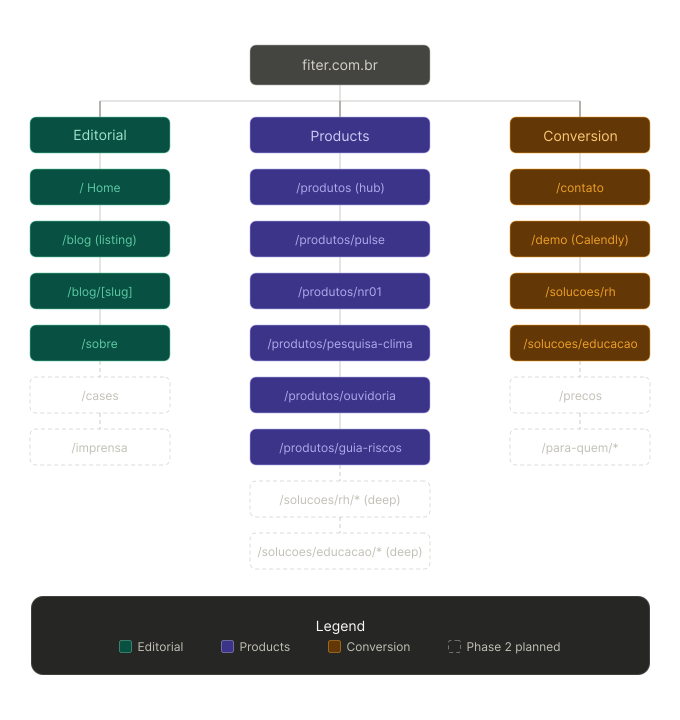
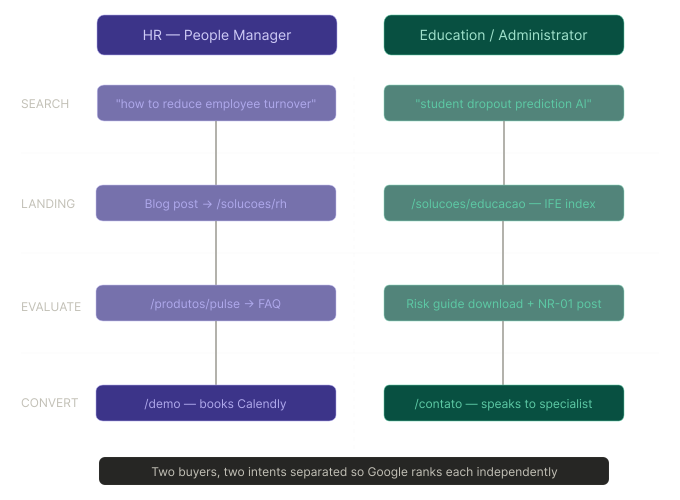
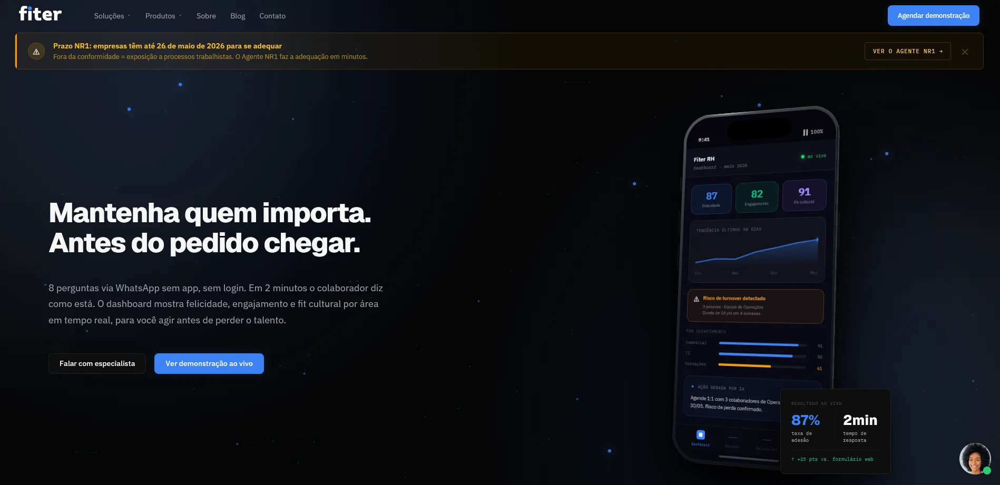
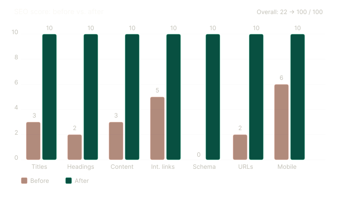
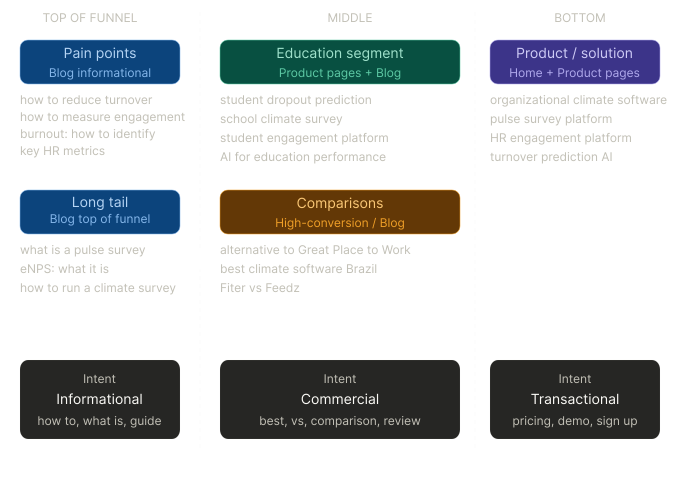
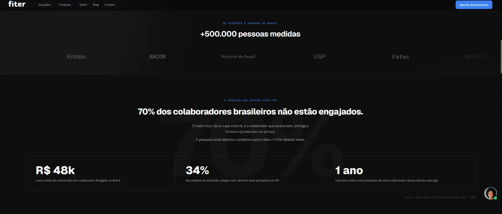
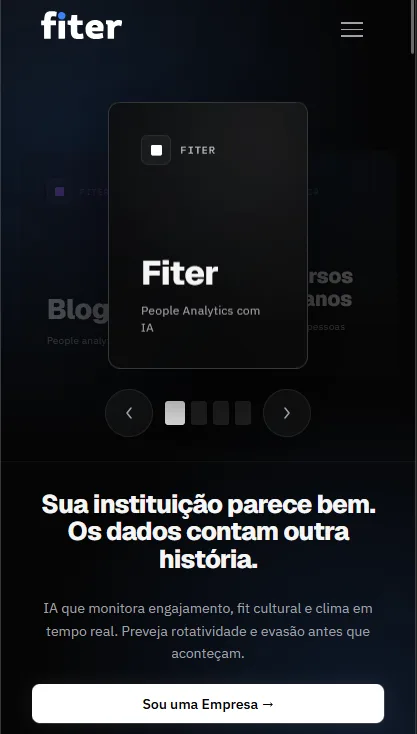
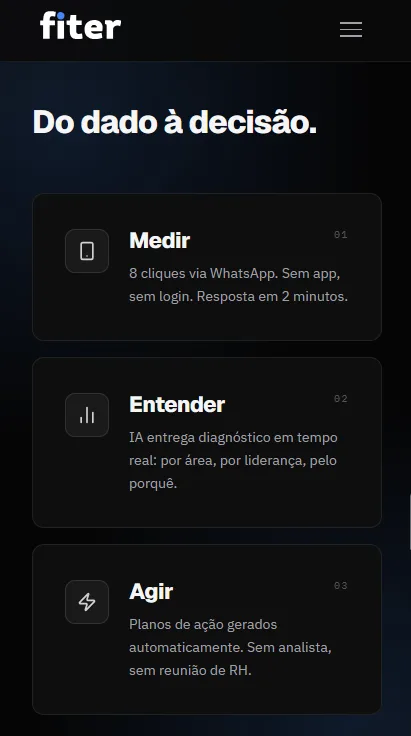
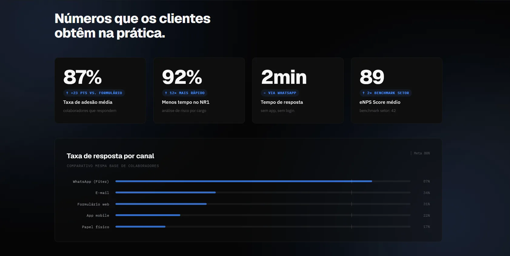

Infraestrutura primeiro. Design depois.
A meta description em produção dizia "parallax one page", o nome literal do template Joomla. A Fiter tinha cobertura editorial na Folha de SP, Forbes Brasil e CBN. Nada disso aparecia nas buscas. Nove problemas críticos de SEO antes de qualquer decisão de design ser tomada. Duas semanas. Dezesseis páginas, totalmente estruturadas, rastreadas e no ar.

Fiter antes da reconstrução · a arquitetura que tornava o ranqueamento impossível
Acima: dois compradores com intenções diferentes chegando à mesma página. O Google não conseguia ranquear nenhum dos dois. Abaixo: autoridade editorial da imprensa nacional presa em um subdomínio, sem contribuir em nada para o domínio principal.
A situação
A Fiter é uma SaaS brasileira de RH e EdTech que usa IA para prever turnover de funcionários, medir clima organizacional e reduzir taxas de evasão estudantil. Eles atendem dois mercados completamente distintos (equipes corporativas de RH e instituições de ensino superior) com produtos separados, compradores separados e intenções de busca separadas.
Antes da reconstrução, a empresa inteira estava em um template Joomla de uma única página. A title tag da homepage era fiter: cinco caracteres, sinal de keyword zero. A meta description era "parallax one page", o nome literal do tema, em produção. Os dois produtos compartilhavam uma única página /produto.html sem nenhuma separação estrutural, e o blog vivia em lab.fiter.com.br, isolando todo backlink e sinal orgânico do domínio principal.
A empresa tinha cobertura editorial na Folha de SP, Estadão, Forbes Brasil e CBN. Mais de 500 mil pessoas mensuradas. Clientes incluindo a Marinha do Brasil. Um site que não fazia nada disso contar.
O GTM estava instalado, mas não configurado. Sem GA4. Sem eventos de conversão. Sem Search Console. Qualquer decisão futura de otimização seria um palpite: não havia baseline para melhorar a partir dele.
O briefing que escrevemos a partir da auditoria: o site não estava falhando por causa do design. Estava falhando porque nunca tinha sido construído como um ativo de negócio. Era uma presença visual sem arquitetura nenhuma por trás. O briefing: reconstruir primeiro a fundação técnica e de conteúdo, depois desenhar em cima disso.
Separar os ecossistemas
RH e Educação são produtos diferentes para compradores diferentes, com intenção de busca diferente. Um diretor de RH buscando "software de clima organizacional" e um reitor universitário buscando "plataforma de retenção estudantil" não são a mesma query, o mesmo decisor, nem o mesmo caminho de conversão. O site tratava os dois como se fossem: uma página, um único conjunto de copy, nenhum caminho dedicado para nenhum dos dois.
O modelo de ranqueamento do Google é correspondência entre keyword e documento. Uma única página não consegue ranquear simultaneamente para dois clusters de keyword não relacionados: os sinais se cancelam. A arquitetura estava bloqueando estruturalmente os dois produtos de aparecerem nas buscas.
Uma página, dois produtos
As duas audiências chegam na mesma URL. A copy não fala especificamente com nenhuma delas. Um único sinal de keyword para dois temas não relacionados. O Google não ranqueia nenhum dos dois. Cada comprador lê uma copy que não foi escrita para ele.
Páginas separadas por ecossistema
/solucoes/rh e /solucoes/educacao, cada uma com seu próprio H1, estratégia de keyword, proposta de valor e CTA. O Google pode ranquear cada uma de forma independente. Cada comprador chega em uma página escrita especificamente para ele.
Cinco landing pages de produto existentes foram migradas e reconstruídas dentro do mesmo design system, com identidades de cor distintas por ecossistema (roxo para RH, verde-petróleo para Educação) dentro de uma fundação de tokens unificada nas 16 páginas.




Reconstruir a fundação de SEO
Nove problemas críticos foram registrados antes de qualquer trabalho de design começar. Corrigir a camada visível sem corrigir a camada estrutural teria sido cosmético: um site redesenhado com a mesma arquitetura continua pontuando 22/100 em uma pele diferente.
A estrutura de SEO é invisível para o cliente, mas determina se o trabalho visual chega a ser visto, o que fez dela o primeiro entregável do cronograma.
Nas 16 páginas: title tags com a keyword principal próxima do início, abaixo de 60 caracteres, únicas por página. Meta descriptions entre 145 e 155 caracteres com keyword, proposta de valor e CTA. Um H1 por página com a keyword principal. H2/H3 estruturados pela hierarquia da seção, não por preferência visual. Texto alternativo de imagem adicionado em todas as páginas: screenshots de produto, logos de clientes, selos editoriais.
O schema markup foi de zero para 16 páginas com dados estruturados específicos por tipo: Organization, WebSite, SoftwareApplication, FAQPage, ContactPage, AboutPage, Blog, BlogPosting, Book. Um sitemap foi criado com 15 URLs indexáveis, prioridades configuradas por tipo de página, páginas noindex excluídas.
O blog foi migrado de lab.fiter.com.br para fiter.com.br/blog. Os mesmos backlinks de imprensa agora acumulam autoridade no domínio principal em vez de isolá-la em um subdomínio. Todas as dependências externas de CDN (Tailwind, Lucide, Google Fonts) foram eliminadas, removendo a sobrecarga de requisições de terceiros em cada carregamento de página.


Trazer a autoridade editorial à superfície
A Fiter tinha cobertura da Folha de SP, Estadão, Forbes Brasil e CBN: backlinks editoriais que a maioria das startups passa anos tentando conquistar. Clientes incluindo Braspress, Kroton, Arcor, Marinha do Brasil, USP e Fatec. Nada disso era visível no site. Um prospect frio não tinha como saber que isso existia.
A autoridade era real e já tinha sido conquistada. Só não estava sendo aproveitada porque não estava sendo mostrada.
Autoridade enterrada
Cobertura editorial e logos de clientes existiam em releases de imprensa e em outros lugares, mas não eram trazidos à superfície no site. Um prospect que não conhecia a Fiter não tinha nenhum sinal de confiança antes ou durante a decisão. A credibilidade era invisível justamente onde mais importava.
Autoridade em evidência
Seção de imprensa na homepage com links editoriais diretos, posicionada como o primeiro sinal de confiança depois do hero. Logos de clientes (Braspress, Kroton, Arcor, Marinha do Brasil) em um carrossel acima da dobra, estabelecendo escala antes do prospect ler uma palavra de copy.
Sinais de confiança funcionam melhor quando posicionados perto de um ponto de decisão. Um prospect frio que não conhece a Fiter vê a Forbes Brasil e a Marinha do Brasil já no primeiro scroll e recalibra sua percepção imediatamente. O ajuste aqui foi puro posicionamento: a autoridade já existia, só precisava aparecer onde a decisão estava sendo tomada.

Rastreamento e front-end
O GTM estava instalado no site anterior, mas nunca foi configurado. Sem GA4. Sem eventos de conversão. Sem Search Console. O site foi lançado com uma baseline, não sem ela: GA4 configurado com eventos de conversão (demo agendada, formulário enviado) e GSC conectado desde o dia um. Todo lead a partir do lançamento é rastreado, atribuído e mensurável.
O template Joomla tinha um carrossel pesado, sem lazy loading, e JavaScript bloqueante, impactando diretamente LCP e CLS no mobile. Core Web Vitals são um fator de ranqueamento direto. Reconstruir sobre um template teria reintroduzido as mesmas restrições em uma pele diferente.
Abordagem com template
Setup inicial mais rápido, mas reintroduz a sobrecarga de CSS/JS de terceiros, uma ordem de carregamento já definida e controle limitado sobre a renderização. Os problemas de performance do site anterior vieram exatamente desse trade-off.
Construção em HTML/CSS limpo
Reconstrução completa: mobile-first, imagens em WebP com lazy loading nativo, nenhum script bloqueando a renderização, HTML semântico do início ao fim, zero dependências externas de CDN. Controle total sobre o que carrega, quando e em qual ordem. Meta: LCP < 2,5s, CLS < 0,1.



Resultados
Nove problemas críticos resolvidos dentro da mesma janela de duas semanas. Tudo abaixo foi medido no lançamento ou nas primeiras semanas do novo site no ar.
22→100
nota de SEO · 7 categorias
1→16
páginas totalmente estruturadas
0→16
páginas com schema markup
O que mudou e não é um número: o cliente saiu de um site que um prospect podia visitar e abandonar sem nenhuma ação clara disponível, para um onde cada página tem uma intenção definida, uma audiência definida e um próximo passo definido. A cobertura editorial que era invisível agora é o primeiro sinal de confiança que um prospect vê.



Reflexões
O briefing estava errado, e esse era exatamente o desafio. A Fiter chegou pedindo um redesign. O problema real eram nove problemas de SEO deixando dois anos de cobertura editorial invisível nas buscas. Auditar a infraestrutura antes de abrir o Figma agora é uma etapa fixa em todo escopo de projeto que escrevo.
Arquitetura da informação tem uma vida útil mais longa do que o design visual. A estrutura de 16 páginas e as duas jornadas de comprador continuarão servindo a Fiter quando a linguagem visual for renovada. A decisão que mais importou foi separar RH corporativo de ensino superior em caminhos distintos com intenções distintas, bem antes de qualquer escolha de layout da homepage.
Cobertura de imprensa sem estrutura indexada é um ativo desperdiçado. Quatro grandes veículos tinham coberto a Fiter. Nada disso construía autoridade de busca. Uma única decisão estrutural capturou tudo isso retroativamente. Arquitetura de sinais de confiança deveria ser um entregável padrão em todo projeto de site desde o primeiro dia.
A restrição de duas semanas foi a restrição certa. Prazos apertados forçam uma priorização que projetos mais longos postergam até ser tarde demais. Eu não mudaria o prazo se fizesse esse projeto de novo.
Fazer o projeto inteiro sozinho, da primeira auditoria ao lançamento, só funciona com o parceiro técnico certo. Eu rodei a auditoria, a IA, a copy e o design system. O Afonso construiu e hospedou o resultado, e ajustou performance até as correções de SEO se sustentarem em produção.
Vamos conversar
Tem um projeto?
Vamos fazer acontecer.